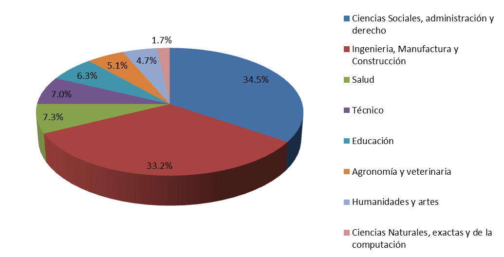
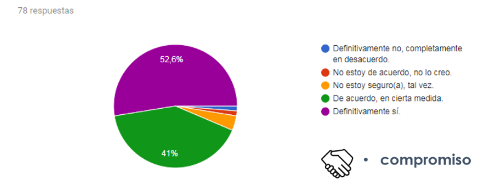
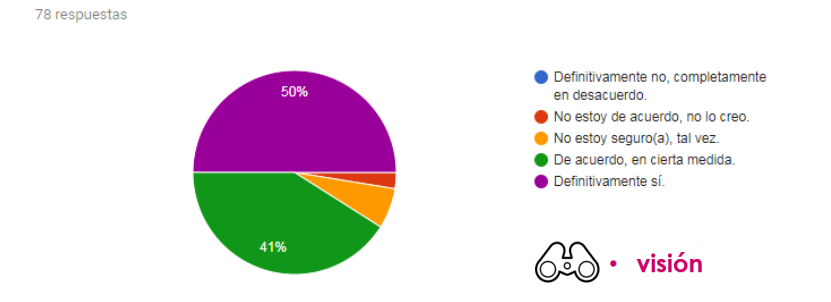

Recientemente el Centro de Investigación para el Desarrollo A.C. (CIDAC) realizó en conjunto con el IMPLAN el estudio Profesionistas Torreón, con el objetivo de medir la brecha de competencias laborales existente en el municipio. El estudio arrojó que la brecha es de 42%, es decir, 42% de las empresas encuestadas han tenido vacantes sin cubrir a pesar de tener candidatos para el puesto.
La brecha es alta, considerando que a nivel nacional es de 26%. Una de las principales recomendaciones fue el desarrollo de competencias blandas en los jóvenes, esto es: cultura general, herramientas de comunicación, trabajo en equipo, innovación y emprendedurismo, liderazgo, inteligencia emocional, eficiencia personal, entre otras.
Partiendo de esta necesidad, el IMPLAN y el Tecnológico de Monterrey han hecho sinergia para crear el encuentro Laguna Y2040 YOUth CHAlleNGE dando oportunidad a universitarios de la Zona Metropolitana de la Laguna de participar con sus ideas innovadoras en favor del futuro de la región.
El primer encuentro se realizó con 250 jóvenes estudiantes del Tec de Monterrey el 6 y 14 de octubre 2017. Un espacio donde discutieron y analizaron la realidad que vive la ciudad y la región lagunera en seis ejes metropolitanos: Buen Gobierno, Desarrollo Económico, Desarrollo Social, Movilidad y Transporte, Sustentabilidad, Entorno Urbano.
Propusieron y trabajaron ideas que podrían mejorar las condiciones de La Laguna desde sus áreas de estudio, obteniendo impactos para fomentar el liderazgo y compromiso individual y con ello transformar su entorno positivamente.
Gracias a la amplia respuesta que se obtuvo de los jóvenes, el 2 y 3 de marzo del 2018 se hará la segunda edición del Laguna Y2040 2018, ampliando la participación de más universidades laguneras.
Se espera la participación de 600 jóvenes universitarios de La Laguna, que podrán asistir a conferencias con expertos líderes en los 6 ejes que se presentaron en el Plan Estratégico Torreón con Enfoque Metropolitano 2040. Asimismo trabajarán en mesas de discusión, con una metodología orientada por el IMPLAN y el Tecnológico de Monterrey.
El primer día se llevará a cabo conferencias con expertos y en el segundo se realizarán mesas de trabajo para llegar a conformar “mi acción de liderazgo” que es un compromiso individual de los asistentes donde cada uno invitará a 4 personas más a participar en una actividad que mejore las condiciones de la región.
Con esto se estima que los alcances serían 600 proyectos, 2,400 personas y 60,000 Impactos, con ello se busca enriquecer la visión juvenil del Plan TRC2040, presentado por el IMPLAN en noviembre de 2016.
Las universidades que se han sumado al evento “LAGUNA Y2040 2018” en pro de fomentar el liderazgo juvenil en la Laguna son el Instituto Tecnológico y de Estudios Superiores de Monterrey Campus Laguna, División de Estudios Superiores Instituto 18 de Marzo, Instituto Tecnológico Superior de Lerdo, Universidad Autónoma de la Laguna, Universidad La Salle, Universidad Tec Milenio, Universidad Politécnica de Gómez Palacio, Universidad Tecnológica de Torreón, Instituto Tecnológico de la Laguna y algunas otras por confirmar.
Contexto universitario
La población universitaria de La Laguna asciende a más de 44 mil estudiantes, de acuerdo con datos al 2015 de la Asociación Nacional de Universidades e Instituciones de Educación Superior (ANUIES).
La región se caracteriza por su amplia oferta educativa. Se ofrecen alrededor de 120 carreras entre los niveles de estudio Técnico Superior, Licenciatura en Educación Normal y Licenciatura Universitaria y Tecnológica.
Las áreas académicas se dividen en: Educación, Artes y Humanidades, Ciencias Sociales, Administración y Derecho; Ciencias Naturales, exactas y de la computación; Ingeniería, manufactura y construcción; Agronomía y veterinaria; Salud, Servicios y Técnicos.
La mayor concentración de estudiantes se encuentra en las áreas de: Ciencias Sociales, Administración y Derecho; así como en Ingeniería, Manufactura y Construcción; Salud, Técnicos y Educación.
El Estudio “Profesionistas Torreón”, indica que las empresas le dan una fuerte importancia a las competencias blandas de los universitarios, en algunos casos, con más énfasis que en las competencias duras.
Por tal motivo, CIDAC recomienda: "que las Instituciones de Educación Superior en cooperación con las empresas y otros actores, deben de ser capaces de enseñar y fortalecer estas competencias entre los jóvenes, a pesar de que son habilidades que no necesariamente se enseñan de forma tradicional en un salón de clases".
Por otra parte, el estudio arrojó que en general la brecha de competencias laborales es alta, ya que en Torreón, alrededor de 6 de cada 10 empresas entrevistadas afirmaron haber tenido una vacante sin llenar durante el último año a pesar de que tuvieron posibles candidatos para el puesto.
Fuentes
- Asociación Nacional de Universidades e Instituciones de Educación Superior (ANUIES).
- Tecnológico de Monterrey Campus Laguna
- Estudio: Profesionistas Torreón CIDAC – IMPLAN
Resultados de la encuesta aplicada a los asistentes al Y2040 realizado en octubre de 2017
Áreas Académicas de los asistentes

Pregunta 1: Después de este evento, mi compromiso de ejercer mi liderazgo para transformar mi entorno es mayor

Pregunta 2: Después de este evento, mi capacidad para diseñar una estrategia para transformar mi entorno es mayor
